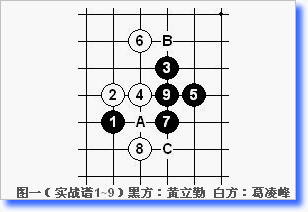
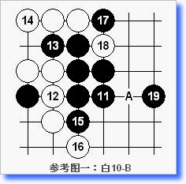
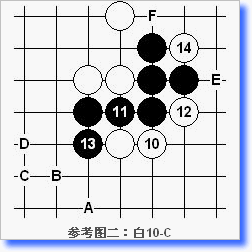
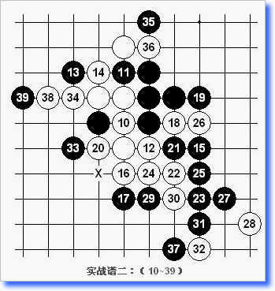
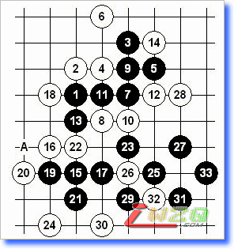
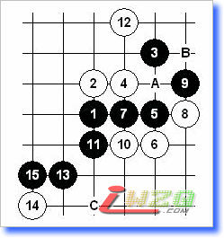

首届全国五子棋锦标赛 对局点评一[黄立勤vs葛凌峰]
#1 首届全国五子棋锦标赛 对局点评一[黄立勤vs葛凌峰] 作者：有志青年 发表时间：2007-10-5 21:03:42
目前，从中国连珠网发布的有限棋谱来看，前几轮选手们似乎还未进入状态。今天看到昨日葛凌峰险胜黄立勤一局棋，这里略谈些看法。葛凌峰近年来越战越勇，基本国内的赛事都能看到他的身影，这么多年力战的棋风一直没什么改变。黄立勤不是很熟悉，但看他赢吴镝那盘还是很精彩的，是一位有实力的选手。

疏星的这个黑5近年大赛少见，初见黑9普通的第一感都是A、C后定型。但如果定型后赢不了，往往就陷入后半盘被包打的局面。对这点要有所觉悟，当然实战未必能看清后面变化。首先，在目前局面下，白棋有三个可以选择的点，实战选择了A点。下面我们来看看B、C两点的大致变化。

这个10黑必胜，19是局部常用的手筋。如12-A，13-13黑棋也追胜。白10-B不成立。

本图的黑11、13先手，白棋只能如此。局面似乎黑棋不错，黑在左边有攻势。不过，白棋防守相对还是很容易。例如：15-A，16-B，15-B后A，16-D，15-E，16-F，还有15-C、D这类点，局部强攻也没什么好结果。从发展的眼光来选择的话，白棋还是可战的。

实战至14定型粗看白优。不过黑15~19似早有准备，20~26只能如此，黑27~31利用先手，再33要点防后，局势已经逆转。局面白棋已经很难防了，实战34最后一搏。37不知道是时限紧张还是大意了，被白棋利用冲四抓X点的四四禁手。37-X点的话黑简单胜，葛凌峰幸运的一局。如意识到16、18白无法胜被包打的局面，那么16单防18是权宜之计，结果较实战的下法好些。
#2 Re:首届全国五子棋锦标赛 对局点评一[黄立勤vs葛凌峰] 作者：有志青年 发表时间：2007-10-11 13:30:17
前几日写的“ 首届全国五子棋锦标赛 对局点评一”中有棋友指出有错误之处，这里表示感谢！参考图二中黑棋胜法见下图。

图一：白16最强防，25、27好次序，以下黑胜容易。
如：16-20或21，17-17！
如：16-22，17-20，19-19，20-17，21-A！

图二：本图是日本第25期名人战第四局，黑方河村典彦vs白方中村茂一局，实战黑13、15错过胜机。河村典彦局后的点评中提到13-A，14-B，15-C黑胜，也就是还原成图一的棋形。经棋友提醒遂想起这局棋来。
#3 Re:首届全国五子棋锦标赛 对局点评一[黄立勤vs葛凌峰] 作者：455 发表时间：2007-10-28 23:02:57
xx学习了